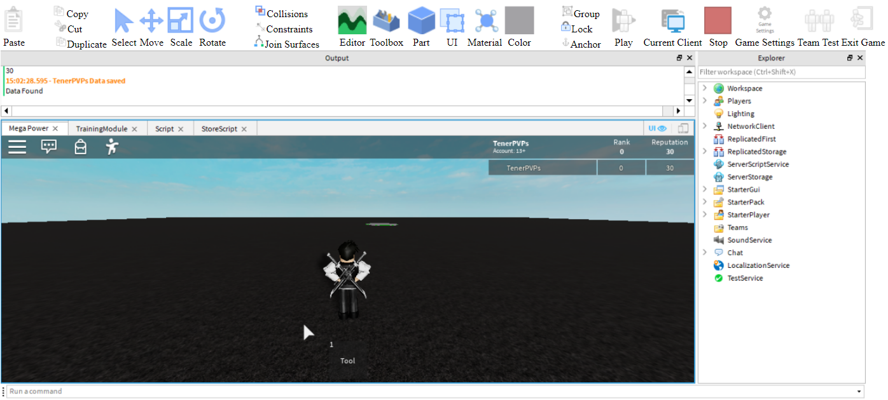

[Website With Navigation Bar]
[Navigation Bar]
By [Mark] & [Muhammad]
Instructions: We can't get to Roblox in school the usual way, but we can recreate the Roblox Studio navbar menu showed in the image below! It took us a lot of work to set this up and should be pretty easy for you:
- Change the list styles to remove the numbers and bullets from thlist items
- Give the box class UL a flex display
- Remove the underlines from the menu links
- Set the hover effect to change the menu item backgrounds
